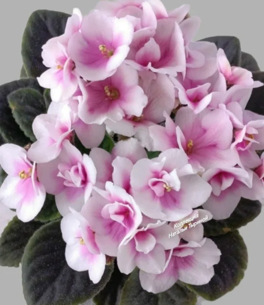
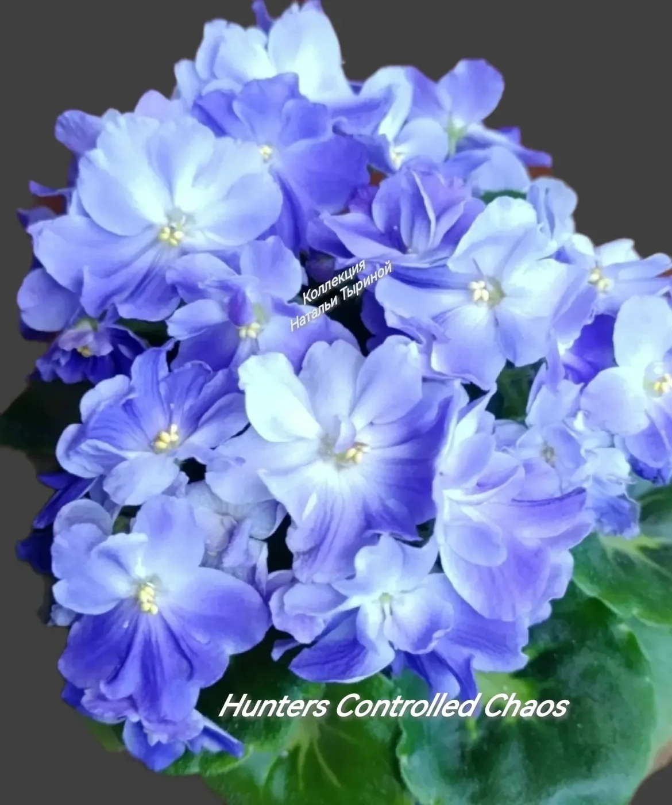

Личная коллекция ЖИВАЯ КОЛЛЕКЦИЯ · РЯЗАНЬ
Маленькие
фиалки.
Большая любовь.
Мир миниатюрных фиалок Натальи Тыриной.
Выбирайте свой сорт и открывайте искусство
заботы о маленьком растении.
✳Выращено с заботой.
Все фотографии — мои.
Все фотографии — мои.

БОТАНИКА В МИНИАТЮРЕ01 / 20
ЗНАКОМЬТЕСЬ С СОРТОМ
↗Hunters Controlled Chaos
Из личной коллекции Натальи01
Только мини-фиалкиОсобенная коллекция небольших растений
02
Опыт из первых рукСоветы, проверенные на своих фиалках
03
Доставка по РоссииУсловия отправки обсудим лично
01 / КОЛЛЕКЦИЯ
У каждой — свой характер
Познакомьтесь с сортами, которые живут у меня.

02 / БАЗА ЗНАНИЙ
Забота начинается
с понимания
Простые ответы и личный опыт выращивания.
Как поливать мини-фиалки
Главное правило: лучше недолить, чем перелить. Особенности полива крошечных розеток.
Читать статьюГрунт для фиалок
Какой грунт любят фиалки, мой путь от ошибок к идеальной смеси и рецепты для разных способов полива.
Читать статью